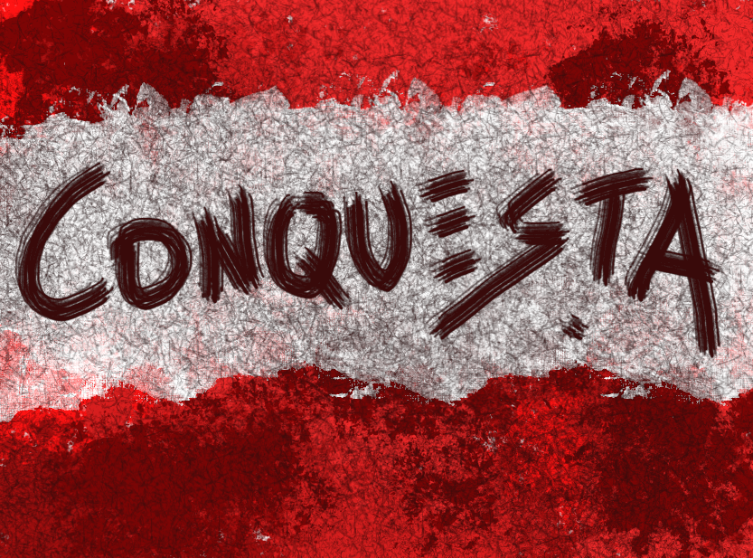

🎮 Welcome to Conquesta!
🎯 Objective
- Dominate the battlefield by capturing and holding territories.
- Defeat enemy units and outmaneuver opponents to gain control of the map.
🕹️ Controls
- Left Click: Select units
- Right Click: Move or attack
- WASD / Arrow Keys: Pan the camera
- Mouse Wheel: Zoom in/out
- Middle Click: Spawn units (if allowed)
📍 Territory Control
- Move your units into an area to capture it.
- Holding a territory gives resources or advantages.
- More zones = stronger position.
🔧 Gameplay
- Use formations and timing to win.
- Join multiplayer to challenge real players.
- Control key points strategically.
💡 Tips
- Group your units.
- Don’t lose ground!
- Pick a unique player name.
-  Image example (optional).